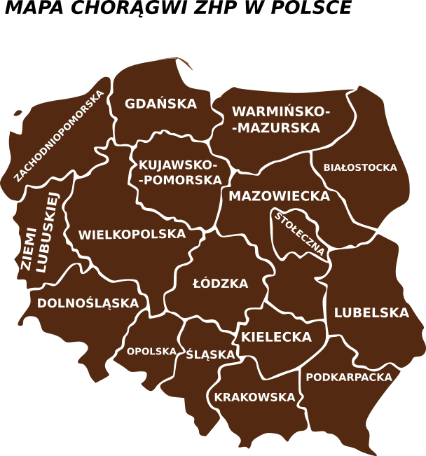

Chorągiew
Chorągwie
są terytorialnymi jednostkami zrzeszającymi hufce, posiadające dodatkowo osobowość prawną. Ich zasięg terytorialny odpowiada najczęściej województwu.
Władze chorągwi:
Zjazd Chorągwi
Rada Chorągwi
Komendant Chorągwi
Komenda Chorągwi
Komisja Rewizyjna Chorągwi
Sąd Harcerski Chorągwi

logo Chorągwi Stołecznej ZHP
logo Chorągwi Krakowskiej ZHP